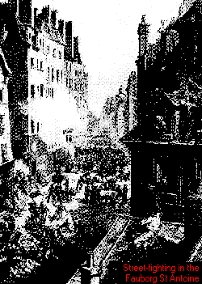
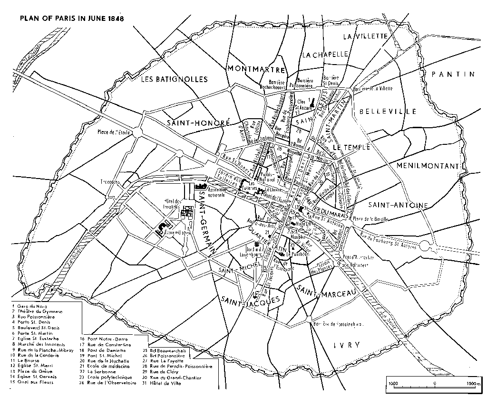
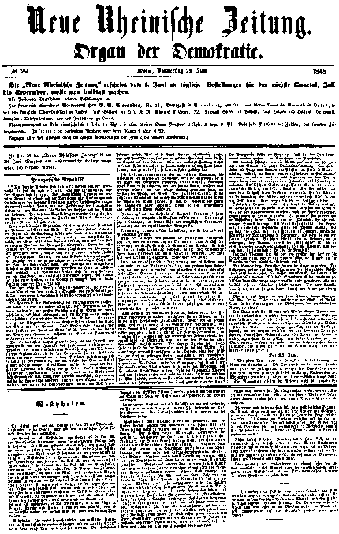

Marx and Engels in Neue Rheinische Zeitung June 1848
| , |  |
The workers of Paris were overwhelmed by superior strength, but they were not subdued. They have been defeated but their enemies are vanquished. The momentary triumph of brute force has been purchased with the destruction of all the delusions and illusions of the February revolution, the dissolution of the entire moderate republican party and the division of the French nation into two nations, the nation of owners and the nation of workers. The tricolor republic now displays only one color, the color of the defeated, the color of blood. It has become a red republic.
None of the big republican figures, whether of the National or of the Reforme, [20] sided with the people. In the absence of leaders and means other than those thrown up by the rebellion itself, the people stood up to the united forces of the bourgeoisie and army longer than any French dynast with the entire military apparatus at its disposal was ever able to stand up to any group of the bourgeoisie allied with the people. To have the people lose its last illusions and break completely with the past, it was necessary that the customary poetic trimmings of French uprisings -- the enthusiastic bourgeois youth, the students of the ecole polytechnique, the tricornes -- should join the side of the suppressers. The medical students had to deny the wounded plebeians the succor of their science. Science does not exist for the plebeian who has committed the heinous, unutterable crime of fighting this time for his own existence instead of for Louis Philippe or Monsieur Marrast.
The Executive Committee, [21] that last official vestige of the February revolution, vanished like a ghost in the face of these grave events. Lamartine's fireworks have turned into the incendiary shells of Cavaignac.
Fraternite, the brotherhood of antagonistic classes, one of which exploits the other, this fraternity which in February was proclaimed and inscribed in large letters on the facades of Paris, on every prison and every barracks -- this fraternity found its true, unadulterated and prosaic expression in civil war, civil war in its most terrible aspect, the war of labor against capital. This brotherhood blazed in front of the windows of Paris on the evening of June 25, when the Paris of the bourgeoisie held illuminations while the Paris of the proletariat was burning, bleeding, groaning in the throes of death.
This brotherhood lasted only as long as there was a consanguinity of interests between the bourgeoisie and the proletariat. Pedants sticking to the old revolutionary tradition of 1793; socialist doctrinaires who begged alms for the people from the bourgeoisie and who were allowed to deliver lengthy sermons and compromise themselves so long as the proletarian lion had to be lulled to sleep; republicans who wanted to keep the old bourgeois order in toto, but without the crowned head; members of the Dynastic Opposition [22] on whom chance imposed the task of bringing about the downfall of a dynasty instead of a change of government; legitimists, [23] who did not want to cast off their livery but merely to change its style -- these were the allies with whom the people had fought their February revolution. What the people instinctively hated in Louis Philip was not Louis Philip himself, but the crowned rule of a class, the capital on the throne. But magnanimous as always, the people thought they had destroyed their enemy when they had overthrown the enemy of their enemies, their common enemy.
The February revolution was the nice revolution, the revolution of universal sympathies, because the contradictions which erupted in it against the monarchy were still undeveloped and peacefully dormant, because the social struggle which formed their background had only achieved an ephemeral existence, an existence in phrases, in words. The June revolution is the ugly revolution, the nasty revolution, because the phrases have given place to the real thing, because the republic has bared the head of the monster by knocking off the crown which shielded and concealed it.
Order! was Guizot's war-cry. Order! shouted Sebastiani, the Guizotist, when Warsaw became Russian. Order! shouts Cavaignac, the brutal echo of the French National Assembly and of the republican bourgeoisie.
Order! thundered his grape-shot as it tore into the body of the proletariat.
None of the numerous revolutions of the French bourgeoisie since 1789 assailed the existing order, for they retained the class rule, the slavery of the workers, the bourgeois system, even though the political form of this rule and this slavery changed frequently. The June uprising did assail this system. Woe to the June uprising!
Under the Provisional Government it was considered good form and, moreover, a necessity to preach to the magnanimous workers -- who, as a thousand official posters proclaimed, "placed three months of misery at the disposal of the Republic" -- it was both good politics and a sign of enthusiasm to preach to the workers that the February revolution had been carried out in their own interests and that the principal issue of the February revolution was the interests of the workers. With the opening of the National Assembly the speeches have become more prosaic. Now it was only a matter of leading labor back to its old conditions, as Minister Trelat said. Thus the workers fought in February in order to be engulfed in an industrial crisis.
It is the business of the National Assembly to undo the work of February, at least as far as the workers are concerned, and to throw them back to their old conditions. But even this was not done, because it is not within the power of any assembly any more than of a king to will a universal industrial crisis -- advance up to this point and no further. In its crude eagerness to put an end to the tiresome February phraseology, the National Assembly did not even take the measures that were possible on the basis of the old conditions. Parisian workers aged 17 to 25 were either pressed into the army or thrown onto the street; those from other parts were ordered out of Paris to the Sologne without even receiving the money that went with such an order; adult Parisians could for the time being secure a pittance in workshops organized on military lines on condition that they did not attend any public meetings, in other words on condition that they ceased to be republicans. Neither the sentimental rhetoric which followed the February events nor the brutal legislation after May 15 [24] achieved their purpose. A real, practical decision had to be taken. For whom did you make the February revolution, you rascals -- for yourselves or for us? The bourgeoisie put this question in such a way that it had to be answered in June with grape-shot and barricades.
The entire National Assembly is nevertheless struck with paralysis, as one deputy [Ducoux. -- Ed.] put it on June 25. Its members are stunned when question and answer make the streets of Paris flow with blood; some are stunned because their illusions are lost in the smoke of gunpowder, others because they cannot understand how the people dare stand up on their own for their own vital interests. Russian money, British money, the Bonapartist eagle, the lily, amulets of all kinds -- this is where they sought an explanation of this strange event. Both parts of the Assembly feel however that a vast gulf separates them from the people. None of them dare stand up for the people.
As soon as the stupor has passed frenzy breaks out. The majority quite rightly greets with catcalls those hapless utopians and hypocrites guilty of the anachronism of still using the term fraternite, brotherhood. The question at issue was precisely that of doing away with this term and with the illusions arising from its ambiguity. When the legitimist Larochejaquelein, the chivalrous dreamer, protested against the infamy of those who cried "Vae victis! Woe to the vanquished!" the majority of the deputies broke into a St. Vitus's dance as if stung by a tarantula. They shouted woe! to the workers in order to hide the fact that they themselves are the "vanquished". Either the Assembly must perish now, or the republic. And that is why it frantically yells -- long live the republic!
Is the deep chasm which has opened at our feet to mislead us, democrats, or cause us to believe that the struggle for a form of polity is meaningless, illusory and futile?
Only weak, cowardly minds can pose such a question. Collisions proceeding from the very conditions of bourgeois society must be overcome by fighting, they cannot be reasoned out of existence. The best form of polity is that in which the social contradictions are not blurred, not arbitrarily -- that is, merely artificially, and therefore only seemingly -- kept down. The best form of polity is that in which these contradictions reach a stage of open struggle in the course of which they are resolved. 
We may be asked, do we not find a tear, a sigh, a word for the victims of the people's wrath, for the National Guard, the mobile guard, [25] the republican guard and the line?
The state will care for their widows and orphans, decrees extolling them will be issued, their remains will be carried to the grave in solemn procession, the official press will declare them immortal, the European reaction in the East and the West will pay homage to them.
But the plebeians are tormented by hunger, abused by the press, forsaken by the physicians, called thieves, incendiaries and galley-slaves by the respectabilities; their wives and children are plunged into still greater misery and the best of those who have survived are sent overseas. It is the right and the privilege of the democratic press to place laurels on their gloomy threatening brow.
{kind=link}
{kind=link}